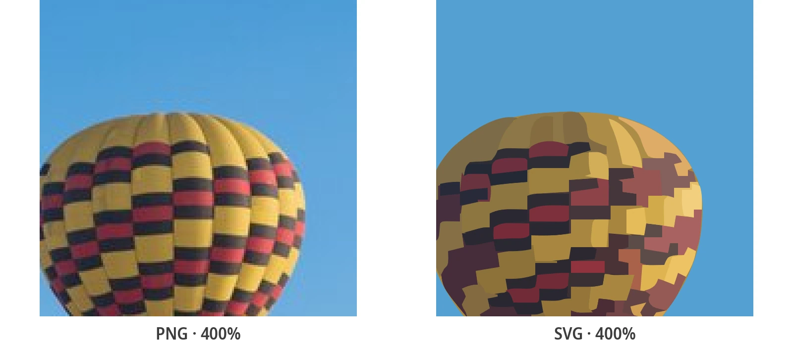

SVG vs PNG/JPG: Warum das Vektorformat für Performance und SEO entscheidend ist
Weniger KB zum Herunterladen, gestochen scharfe Darstellung von Mobile bis 4K, bessere Core Web Vitals. Erfahren Sie, warum Entwickler und SEO-Experten ihre Logos und Icons auf SVG umstellen.
Wie man ein PNG- oder JPG-Logo in SVG optimiert (3 Schritte)
Sie brauchen kein Illustrator. PixelToPath vektorisiert Ihre Datei und liefert ein SVG, das direkt in HTML eingebunden werden kann.
Laden Sie das PNG oder JPG hoch
Ziehen Sie das Logo, Icon oder Piktogramm hinein, das derzeit als PNG oder JPG verwendet wird. Je einfacher der Pfad (einfarbiger Hintergrund, scharfe Konturen), desto kleiner wird das SVG.
Wählen Sie die richtige Voreinstellung
Schwarzweiß für ein Logotyp oder ein monochromes Icon. Poster für Logos mit wenigen flachen Farben. Vermeiden Sie Foto: Zu viele Details vergrößern das SVG ohne visuellen Gewinn für ein Logo.
Integrieren Sie das SVG in die Website
Laden Sie die Datei herunter und verwenden Sie sie als Bild, Sprite oder Inline-SVG. Eine einzige Datei ersetzt die Varianten @1x, @2x und @3x.
PNG und JPG: Perfekt für Fotos, zu groß für Benutzeroberflächen
PNG und JPG sind Rasterformate: Das Bild ist ein Raster aus Pixeln. Ein als PNG 512×512 exportiertes Logo „fotografiert“ jeden Punkt. Um auf einem Retina-Bildschirm scharf zu bleiben, müssen Sie oft eine zwei- oder dreimal so große Version bereitstellen, also zwei- oder dreimal so viele KB. JPG komprimiert Fotos besser, zerstört aber flache Farben, fügt Artefakte um Texte hinzu und unterstützt keine Transparenz. Beide eignen sich nicht für ein Logotyp oder Icon, das in der Navigation mit 24 px und im Header mit 240 px angezeigt werden soll.
SVG (Scalable Vector Graphics) beschreibt Formen durch Kurven und Koordinaten, nicht durch Pixel. Ein PNG mit PixelToPath zu vektorisieren bedeutet, eine feste Bitmap durch einen Pfad zu ersetzen, den der Browser in exakt der benötigten Bildschirmgröße neu zeichnet. Das Ergebnis: Eine meist deutlich kleinere Datei und identische Schärfe auf Smartphone, Desktop und 4K-Display.
Was SVG konkret für eine Website verändert
Für die Benutzeroberfläche ist SVG kein ästhetisches „Extra“. Es ist ein Performance-Hebel: weniger Bytes im Netzwerk, weniger Varianten zu verwalten, einfacherer Cache und natives Vektor-Rendering in allen modernen Browsern.
Die sichtbarsten Vorteile für Entwickler oder SEOs:
- Dateigröße: Ein einfaches Logo schrumpft oft von 40-80 KB als PNG auf wenige KB als SVG, und Sie sparen sich die @2x / @3x Exporte
- Skalierbarkeit: Eine Datei, gestochen scharf von 16 px bis zum 4K-Vollbild, ohne srcset oder Image Media Queries
- Core Web Vitals: Weniger Daten zum Herunterladen (LCP) und ein stabiler Platzhalter dank viewBox (CLS)
- Technisches SEO: Schnellere Seiten auf Mobilgeräten, ein Format, das Google interpretieren kann, und Text, der im SVG vorhanden sein kann
PNG vs SVG: Das Gewicht eines Logos ist nicht zu unterschätzen
Bilder sind nach wie vor einer der größten Gewichtsblöcke einer Seite. Man optimiert Fotos zu WebP, vergisst aber das Header-Logo und die etwa 20 PNG-Icons im CSS. Doch genau diese Dateien wiederholen sich auf allen URLs: Jede verlorene Millisekunde betrifft die gesamte Website.
Größenordnungen nach der Vektorisierung mit PixelToPath, basierend auf dem typischen Szenario einer Showcase-Website oder Web-App:
| Szenario | PNG / JPG | SVG |
|---|---|---|
| 512-px-Logo mit Transparenz | 40 bis 80 KB | 2 bis 12 KB, je nach Anzahl der Farben und Knoten |
| Dasselbe Logo, ausgeliefert als @2x (1024 px) für Retina | Das Gewicht verdoppelt sich, manchmal verdreifacht es sich | Eine einzige Datei, unverändert |
| 20 UI-Icons, exportiert als @3x (72×72) | 40 bis 160 KB zusätzlich | Insgesamt nur wenige KB |
| Logo mit Flächenfarben aus einem JPG | Artefakte und Halos um Formen und Text | Saubere Kanten und eine noch kleinere Datei |
Die Regel ist einfach: Alles was eine Form, ein Text, ein Piktogramm oder ein Logotyp ist, profitiert von SVG. Fotos und Screenshots bleiben JPG, WebP oder AVIF. SVG ist kein universeller Ersatz: Es ist das richtige Format für die Benutzeroberfläche.
Skalierbarkeit: Eine Datei scharf vom Smartphone bis 4K
Ein PNG ist nur in seiner nativen Auflösung scharf. Wird es vergrößert, sieht man Pixel. Wird es stark verkleinert, muss der Browser es neu berechnen. Daher die Jonglage mit @1x, @2x, @3x Dateien, srcset und CSS-Pixeldichten. Jeder neue Breakpoint oder neue Bildschirmdichte (Retina, moderne Smartphones, 4K-Monitore) erfordert einen neuen Export oder eine viel zu große Datei „für alle Fälle“.
Ein SVG ignoriert diese Einschränkung. Die Rendering-Engine berechnet die Kurven in der angeforderten CSS-Größe. 32 px Favicon, 48 px Logo in der Navigation, dieselbe Marke mit 400 px im Header, 4K-Projektion: Es ist dieselbe Datei. Kein Unschärfe, kein Aliasing, keine zweite Anfrage für die High-Density-Version. Für eine Komponentenbibliothek bedeutet dies auch weniger technische Schulden: ein Icon, eine Datei, alle Größen.

Core Web Vitals und SEO: Warum sich Google um das Format kümmert
Mobile Geschwindigkeit ist ein Ranking-Faktor. Die Core Web Vitals (LCP, INP, CLS) messen, was der Nutzer empfindet. Wenn Sie ein schweres PNG-Logo oder eine Reihe von Raster-Icons durch SVGs ersetzen, schrumpft eine Seite nicht von 4 MB auf 40 KB. Aber beim Design der Website ist der Effekt sofort spürbar, besonders bei einer 4G-Verbindung oder einem LCP, der vom Header-Logo blockiert wird.
Konkret hilft das Vektorformat bei drei Metriken, vorausgesetzt die Pfadkomplexität bleibt angemessen:
- LCP (Largest Contentful Paint): Wenn das größte sichtbare Element ein Logo oder eine flache Illustration ist, wird ein SVG mit wenigen KB schneller geladen als ein 150 KB PNG @2x. Weniger Netzwerkstaus für den Rest der Seite
- CLS (Cumulative Layout Shift): Ein SVG mit width, height und viewBox reserviert seinen Platz bereits beim HTML-Parsing. Man muss nicht auf die Dekodierung einer Bitmap warten, um das Verhältnis zu kennen – das bedeutet weniger Layout-Verschiebungen
- INP und Haupt-Thread: Ein einfaches SVG (Logo, Icon) kostet wenig Rechenleistung. Vermeiden Sie jedoch „Foto“-SVGs mit Tausenden von Pfaden: Sie können mehr als ein PNG wiegen und den Prozessor belasten. Darum ist ein sauberer Pfad über PixelToPath wichtig, keine Pixel-für-Pixel-Kopie
- SEO jenseits der Geschwindigkeit: Google indexiert SVGs. Ein eingebettetes Logo kann einen barrierefreien Titel tragen. Ein SVG-Bild mit einem alt-Attribut bleibt die Basis. Und eine leichtere Seite reduziert die technische Absprungrate – ein Erfahrungssignal, das beim Ranking berücksichtigt wird
Warum mit PixelToPath vektorisieren statt manuell exportieren?
Sie haben bereits das PNG des Kunden, aber nicht die Illustrator-Quelldatei. PixelToPath erstellt saubere, kostenlose und webfähige Pfade.
Leichtes, einsatzbereites SVG
Die Engine produziert nutzbare Pfade, keine Knotenfabrik. Ideal für ein Logo oder Icon, das Sie bei jedem Seitenaufruf ausliefern.
Komplett kostenlos
Kein Design-Abo, kein Wasserzeichen auf dem SVG. Vektorisieren Sie die gesamte Corporate Identity (Logo, Favicon, Icons) zum Nulltarif.
Dateisicherheit
Markendateien werden verarbeitet und dann verworfen. Nichts wird gespeichert, nichts wiederverwendet. Geeignet für Brandings unter Geheimhaltungsvereinbarung.
Logo- und Piktogramm-Voreinstellungen
Schwarzweiß für das monochrome Icon, Poster für ein Logo mit flachen Farben. Sie steuern den Detailgrad vor dem Export.
Stapelverarbeitung auf dem Desktop
Ein ganzes PNG-Icon-Set, das in SVG umgewandelt werden muss? Die Open-Source-App für Windows / Linux verarbeitet Dateien offline, ohne Limit.
PNG, JPG, BMP, WebP
Ein einziges Tool, egal ob das Logo als transparentes PNG, als gescanntes JPG oder als WebP-Export aus Figma vorliegt.
Wo SVG PNG/JPG auf einer echten Website übertrifft
Das ist nicht theoretisch. Hier sind die Bereiche, in denen sich das Vektorformat sofort auszahlt:
- Header- und Footer-Logo: Eine einzige Datei, scharf in Retina, oft eines der meistgesehenen Elemente und manchmal das LCP auf einer minimalistischen Startseite
- Icon-System: Schluss mit 1x/2x PNG-Sprites. Jedes Piktogramm ist ein SVG (oder SVG-Sprite), das per CSS (currentColor) gestaltet werden kann, ohne neuen Export
- Favicon und Apple-Touch: Ein modernes SVG-Favicon plus ein PNG-Fallback vermeidet unzählige Größen (16, 32, 180 px), die gewartet werden müssen
- UI-Illustrationen und leere Zustände: Flache Vektorzeichnungen bleiben im Vollbildmodus scharf, ohne das Gewicht eines Header-Bildes zu verursachen
- SEO Landing Page: Jedes gesparte KB beim Design verbessert Lighthouse, PageSpeed Insights und das mobile Erlebnis – Signale, die das Ranking beeinflussen
Behalten Sie JPG/WebP für Fotos. Stellen Sie Logos, Piktogramme und flache Illustrationen auf SVG um. Das ist die Aufteilung, die die schnellsten Websites bereits anwenden.
Verwandte Konvertierungsleitfäden
Vektorisieren Sie Ihre Dateien und vertiefen Sie sich dann in das Format, das Sie betrifft.
Häufig gestellte Fragen (FAQ)
Ist ein SVG immer kleiner als ein PNG oder JPG?
Für ein Logo, ein Icon oder eine flache Illustration: ja, fast immer, besonders im Vergleich zur Retina-Version eines PNG. Für ein Foto: nein, das „Foto“-SVG wird zu einer Wolke von Pfaden, die schwerer ist als ein JPG oder WebP. Vektorisieren Sie die Benutzeroberfläche, komprimieren Sie die Fotos.
Verbessert SVG wirklich die Core Web Vitals und das SEO?
Es verbessert das, was UI-Bilder verbessern können: weniger Bytes (LCP, wenn das Logo oder die Illustration das Hauptelement ist), vorhersehbarer Rendering-Platz (CLS), weniger Varianten zum Herunterladen. Google nutzt Geschwindigkeit als Signal, besonders auf mobilen Geräten. Es ist keine magische Abkürzung fürs Ranking, sondern technische Hygiene, die sich in PageSpeed Insights messen lässt.
Sollten alle Bilder der Website durch SVG ersetzt werden?
Nein. Fotos, Screenshots, Texturen, komplexe Verläufe: JPG, WebP oder AVIF. SVG für Logos, Icons, Diagramme, Piktogramme, flache Illustrationen. Ein zu detailliertes SVG kann dem INP schaden. Die Foto-Voreinstellung von PixelToPath dient der Stilisierung, nicht dem Ersetzen eines Inhalts-JPEGs.
Wie integriere ich ein SVG ohne CLS zu verursachen?
Geben Sie immer eine Breite und Höhe (oder ein CSS aspect-ratio) an, die der viewBox entspricht. Bei einem Image-Tag (src, width, height, alt) reserviert der Browser den Platz vor dem Download. Bei Inline-SVG behalten Sie die viewBox bei und vermeiden Sie es, den Code nach der ersten Anzeige ohne Dimensionen einzufügen.
Wie erhalte ich mit PixelToPath ein Logo-SVG aus einem PNG?
Öffnen Sie das Online-Tool, legen Sie das PNG ab (am besten mit transparentem Hintergrund und ausreichend groß), wählen Sie Schwarzweiß oder Poster, passen Sie die Details an und konvertieren Sie. Öffnen Sie das SVG im Browser oder in Figma, um die Konturen zu prüfen, und nutzen Sie es dann produktiv. Kostenlos, ohne Account, Dateien werden nicht gespeichert.
Wandeln Sie Ihr PNG-Logo in SVG um und messen Sie die Dateigröße
Laden Sie Ihre aktuelle Datei hoch, laden Sie das SVG herunter, vergleichen Sie die KB. Kostenlos, ohne Anmeldung. Der erste Hebel für Core Web Vitals ist oft genau dieser.
Open-Source-Entwicklung unterstützen
Die Nutzung von PixelToPath ist kostenlos. Wenn Ihnen dieses Tool geholfen hat, Zeit zu sparen, ziehen Sie in Erwägung, mir einen Kaffee zu spendieren.
❤️ Spenden über PayPal